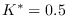

Next: Analysis and Simulation of Up: Tools for Feedback LTI Previous: Tools for Feedback LTI Contents Index
The tool here developed consists of a function set that allows for a given variable gain value K:
Besides in this tool, additional information about,
Ejemplo 3.2 As an example, the resolution of the Exam. 3.1 is shown using the developed functions, which can be invoked directly from the Octave command window or, through an .m extension file, as is usually done.
% packages are loaded.
pkg load control signal ltitool
% Clean memory and command window.
clear all, clc
% -----------------------------------------------
% Default values for the variables are defined
% -----------------------------------------------
% G(s)H(s):
s=tf('s');
Gs=2.0/((5*s+1)*(1*s^2+1*s+1)); delay=0;
Hs=(5*s+1)/(5*s);
Kr=1.25;
GH=minreal(Kr*Gs*Hs);
% Simulation parameters
AmplitudSP=1; % step amplitude
tFinal=30; % simulation time
% -----------------------------------------
% Analisys Tools
% -----------------------------------------
% Root locus
figure(1), clf(figure(1),"reset");
[Kast,Kast_ult,wultimo,GM,wcg,PM]=GHrlocusplot(GH.num{1,1},GH.den{1,1},Kr,1000);
% Bode diagrams
figure(2), clf(figure(2),"reset");
[Kast,Kast_ult,wultimo,GM,wcg,PM]=GHbodeplot(GH.num{1,1},GH.den{1,1},delay,Kr);
% Nyquist diagram
figure(3), clf(figure(3),"reset");
[Kast,Kast_ult,wultimo,GM,wcg,PM]=GHnyquistplot(GH.num{1,1},GH.den{1,1},delay,Kr);
% -----------------------------------------
% Simulation Tools
% -----------------------------------------
% Step response
figure(4), clf(figure(4),"reset");
GHstepresponse(GH.num{1,1},GH.den{1,1},AmplitudSP,tFinal,1000);
% Impulse response
figure(5), clf(figure(5),"reset");
GHimpulseresponse(GH.num{1,1},GH.den{1,1},tFinal,1000);
% Additional information
[estabilidad,yinf,Test]=additionalinfo(GH.num{1,1},GH.den{1,1},AmplitudSP,tFinal,1000);
As an example, the root locus diagram of this application is shown.
Ejemplo 3.3
Figure 4.6 shows the application window performed for the analysis of closed-loop LTI systems based on the expression of G(s)H(s).
|
|
Figure 4.7 shows the numerical simulation of the feedback system when . Similarly, the poles and zeros maps of G(s)H(s) can be obtained from the feedback system, together the root locus, Bode and Nyquist diagrams.
In addition, the additional information button provides information of the feedback system related to stability, establishment value, and establishment time, GM, PM, y . Note that the values and GM here reported are coincident with that it was presented by the Exam. 3.1.
|
|